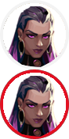

Reyna
Criada no coração do México, Reyna domina o combate individual, destacando-se a cada abate efetuado. Sua capacidade só é limitada por sua própria perícia, tornando-a bastante dependente de desempenho.
Um jogo de tiro tático 5x5 com personagens originais
Jogue Grátis// AGENTES
Criada no coração do México, Reyna domina o combate individual, destacando-se a cada abate efetuado. Sua capacidade só é limitada por sua própria perícia, tornando-a bastante dependente de desempenho.

Killjoy, uma alemã genial, defende o campo de batalha facilmente usando seu arsenal de invenções. Se o dano causado por seu equipamento não der cabo dos inimigos, os efeitos negativos de seus queridos robôs dão conta do recado.

Mandando um salve direto da Austrália, Skye e sua equipe de feras desbravam territórios hostis. Com seus poderes de cura e suas criações que partem pra cima dos inimigos, qualquer equipe ficará mais forte e mais segura tendo Skye como aliada.

Representando a Coreia do Sul, sua terra natal, Jett tem um estilo de luta ágil e evasivo que permite que ela assuma riscos como ninguém. Ela corre em meio a qualquer confronto, cortando os inimigos antes mesmo que eles percebam quem ou o que os atingiu.
A CRIATIVIDADE É SUA MELHOR ARMA. Mais do que armas e munição, VALORANT inclui agentes com habilidades adaptativas, rápidas e letais, que criam oportunidades para você exibir sua mecânica de tiro. Cada Agente é único, assim como os momentos de destaque de cada partida!
VEJA MAIS